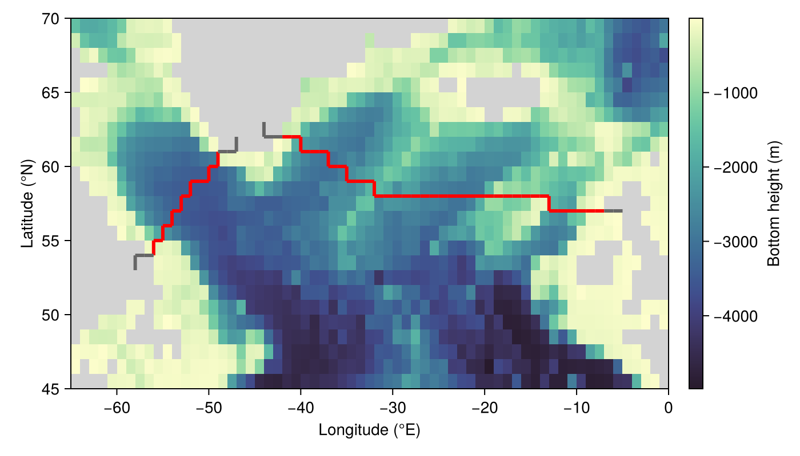

Transports through sections
The volume, heat, salt and freshwater transports through a strait or gateway are computed from a TransportSection: the u and v faces of the grid that the section crosses, each with a sign that says which way through the face counts as positive. A transport sums, over the open faces of the section and all levels,
\[\sum s \, u \, A \, (α + β c) \, ,\]
where $s = ±1$ is the sign of the face, $u$ the velocity normal to it, $A$ the face area and $c$ the tracer interpolated to the face. The face areas are the model's own, so partial bottom cells and a moving free surface are accounted for.
| Transport | $α$ | $β$ | $c$ | Units |
|---|---|---|---|---|
volume_transport | $1$ | $0$ | m³ s⁻¹ | |
heat_transport | $-ρᵒᶜ cᵒᶜ Tᵣ$ | $ρᵒᶜ cᵒᶜ$ | $T$ | W |
salt_transport | $0$ | $ρᵒᶜ / 1000$ | $S$ | kg s⁻¹ |
freshwater_transport | $1$ | $-1 / Sᵣ$ | $S$ | m³ s⁻¹ |
Here $ρᵒᶜ$ and $cᵒᶜ$ are the ocean's reference density and heat capacity, and $Tᵣ$ and $Sᵣ$ the reference_temperature and reference_salinity.
The OSNAP sections
We follow, approximately, the two sections of the Overturning in the Subpolar North Atlantic Program (OSNAP) on a coarse grid with bathymetry from ETOPO.
using NumericalEarth
using Oceananigans
using CairoMakie
underlying_grid = LatitudeLongitudeGrid(size = (65, 25, 20), z = (-5000, 0),
longitude = (-65, 0), latitude = (45, 70))
bottom_height = regrid_bathymetry(underlying_grid)
grid = ImmersedBoundaryGrid(underlying_grid, PartialCellBottom(bottom_height))65×25×20 ImmersedBoundaryGrid{Float64, Bounded, Bounded, Bounded} on CPU with 3×3×3 halo:
├── immersed_boundary: PartialCellBottom(mean(zb)=-1660.96, min(zb)=-4981.24, max(zb)=0.0, ϵ=0.2)
├── underlying_grid: 65×25×20 LatitudeLongitudeGrid{Float64, Bounded, Bounded, Bounded} on CPU with 3×3×3 halo
├── longitude: Bounded λ ∈ [-65.0, 0.0] regularly spaced with Δλ=1.0
├── latitude: Bounded φ ∈ [45.0, 70.0] regularly spaced with Δφ=1.0
└── z: Bounded z ∈ [-5000.0, 0.0] regularly spaced with Δz=250.0A section is a list of (longitude, latitude) waypoints joined by great circles. Positive transport flows to the right of the section, walking from the first waypoint to the last. OSNAP West runs from Greenland to Labrador and OSNAP East from Scotland to Greenland, so that northward transport is positive in both. Both ends of each section are on land, so the section spans the whole basin.
osnap_west = TransportSection(grid, [-47, -58], [61.5, 53])TransportSection on 65×25×20 ImmersedBoundaryGrid{Float64, Bounded, Bounded, Bounded} on CPU with 3×3×3 halo
└── crosses 9 u faces and 11 v facesosnap_east = TransportSection(grid, [-5, -13, -21, -31, -44], [57, 57.5, 58, 58, 62.5])TransportSection on 65×25×20 ImmersedBoundaryGrid{Float64, Bounded, Bounded, Bounded} on CPU with 3×3×3 halo
└── crosses 6 u faces and 39 v facesThe faces of the sections on the bathymetry. Faces next to land are part of a section but carry no transport.
λ, φ = λnodes(grid, Center()), φnodes(grid, Center())
λᶠ, φᶠ = λnodes(grid, Face()), φnodes(grid, Face())
h = interior(bottom_height, :, :, 1)
wet = h .< 0
fig = Figure(size = (700, 400))
ax = Axis(fig[1, 1], xlabel = "Longitude (°E)", ylabel = "Latitude (°N)")
hm = heatmap!(ax, λ, φ, ifelse.(wet, h, NaN), colormap = Reverse(:deep), nan_color = :lightgray)
for section in (osnap_west, osnap_east)
u_faces = Tuple.(findall(!=(0), interior(section.u_signs, :, :, 1)))
v_faces = Tuple.(findall(!=(0), interior(section.v_signs, :, :, 1)))
segments = vcat([(Point2(λᶠ[i], φᶠ[j]), Point2(λᶠ[i], φᶠ[j+1])) for (i, j) in u_faces],
[(Point2(λᶠ[i], φᶠ[j]), Point2(λᶠ[i+1], φᶠ[j])) for (i, j) in v_faces])
open_faces = vcat([wet[i-1, j] & wet[i, j] for (i, j) in u_faces],
[wet[i, j-1] & wet[i, j] for (i, j) in v_faces])
linesegments!(ax, segments, color = ifelse.(open_faces, :red, :gray40), linewidth = 3)
end
Colorbar(fig[1, 2], hm, label = "Bottom height (m)")
fig
Transports
Transports are scalar Fields computed from an ocean simulation. Here we prescribe a northward flow of 1 cm s⁻¹ and a temperature that decreases with depth. This flow is only for illustration, so the transports below are not meant to match the OSNAP observations.
ocean = ocean_simulation(grid; momentum_advection = nothing, tracer_advection = nothing,
closure = nothing, coriolis = nothing)
set!(ocean.model, v = 0.01, T = (λ, φ, z) -> 4 + 6 * exp(z / 200), S = 35)
for (name, section) in (("OSNAP West", osnap_west), ("OSNAP East", osnap_east))
volume = compute!(Field(volume_transport(ocean, section)))
heat = compute!(Field(heat_transport(ocean, section)))
freshwater = compute!(Field(freshwater_transport(ocean, section; reference_salinity = 34.8)))
println(name, ": ", round(volume[1, 1, 1] / 1e6, digits = 2), " Sv, ",
round(heat[1, 1, 1] / 1e12, digits = 1), " TW, ",
round(freshwater[1, 1, 1] / 1e6, digits = 3), " Sv of freshwater")
endOSNAP West: 11.33 Sv, 202.8 TW, -0.065 Sv of freshwater
OSNAP East: 36.21 Sv, 677.4 TW, -0.208 Sv of freshwaterOutput
Every transport is a Field, so it can be written like any other output. Averaged with an AveragedTimeInterval, the transports include the covariance of velocity and tracers within each averaging window, which transports computed from averaged velocities and tracers miss.
using Oceananigans.Units
transports = (osnap_west_volume = volume_transport(ocean, osnap_west),
osnap_east_volume = volume_transport(ocean, osnap_east),
osnap_west_heat = heat_transport(ocean, osnap_west),
osnap_east_heat = heat_transport(ocean, osnap_east))
ocean.output_writers[:transports] = JLD2Writer(ocean.model, transports;
filename = "transports.jld2",
schedule = AveragedTimeInterval(1day),
overwrite_files = true)JLD2Writer scheduled on TimeInterval(1 day):
├── filepath: build/transports.jld2
├── 4 outputs: (osnap_west_volume, osnap_east_volume, osnap_west_heat, osnap_east_heat) averaged on AveragedTimeInterval(window=1 day, stride=1, interval=1 day)
├── array_type: Array{Float32}
├── including: [:coriolis, :buoyancy, :closure]
├── file_splitting: NoFileSplitting
└── file size: 0 bytes (file not yet created)